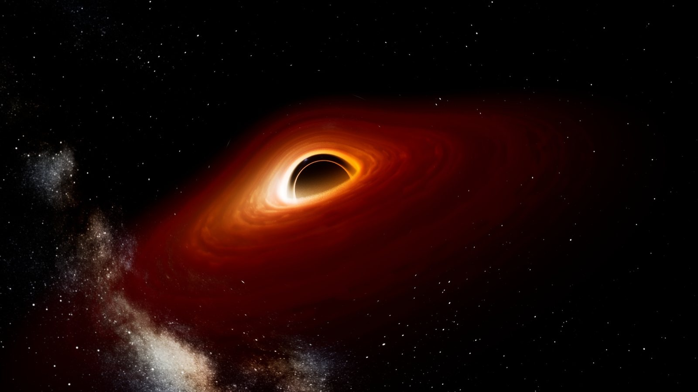
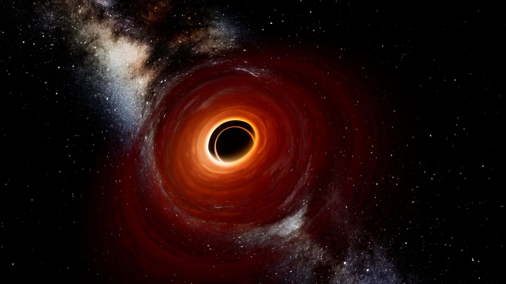
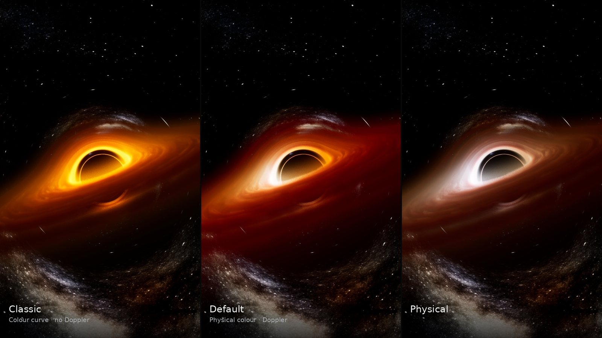
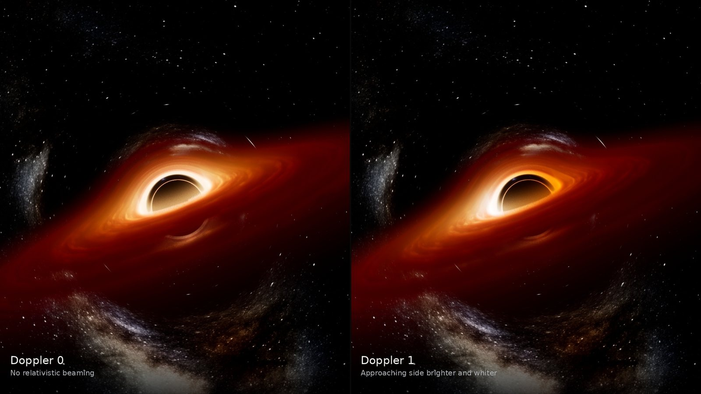
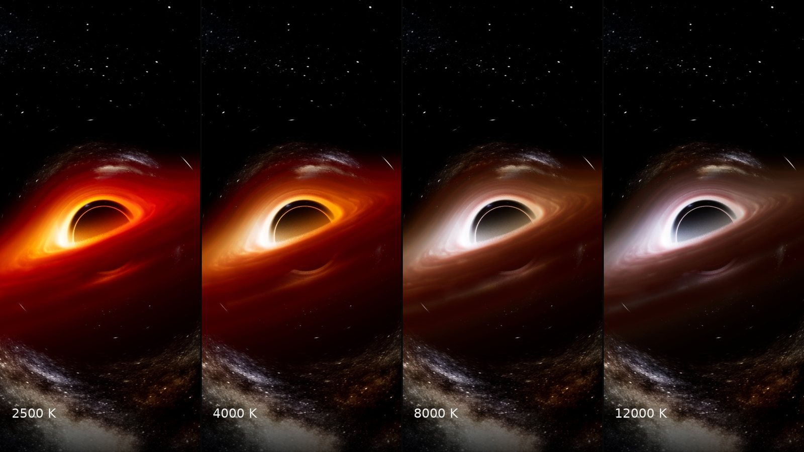
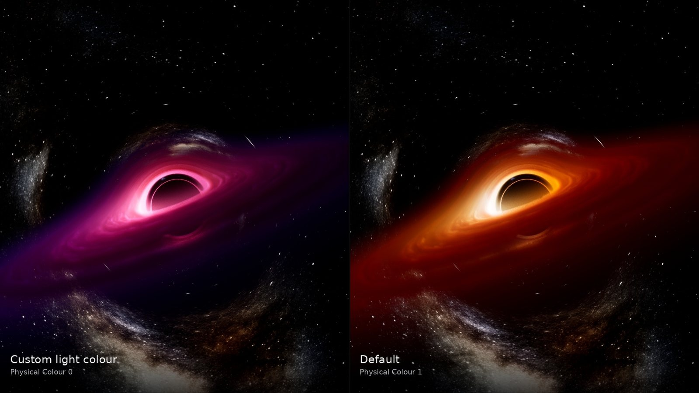
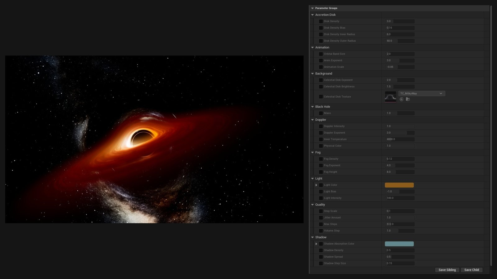
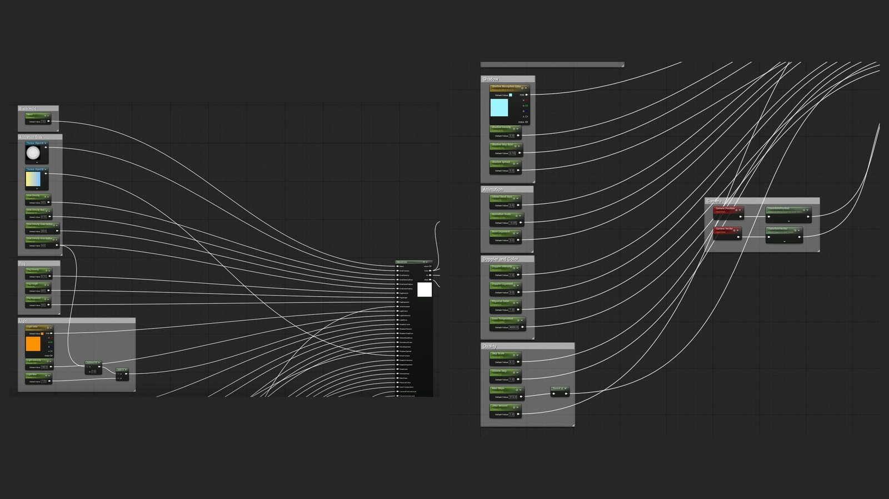
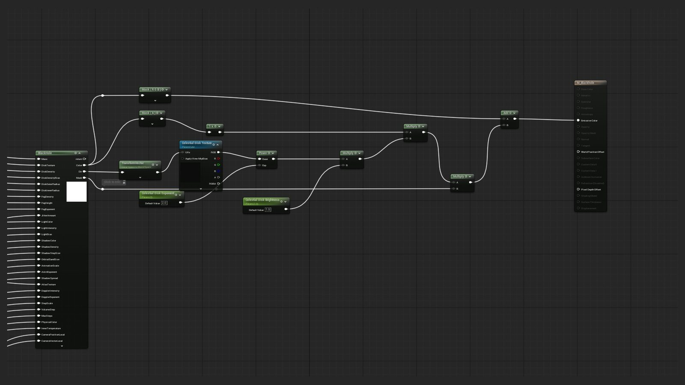

A real-time black hole for Unreal Engine 5. Starlight bends around it, a glowing disk of gas orbits it, and the side of the disk rushing toward you shines brighter and bluer than the side moving away.
It's a single material on an inverted sphere, with the heavy lifting in one custom HLSL node. Version 2.0 is free on Fab, with a demo level, presets and a parameter set grouped for artists.


How it fits together
Every pixel of the sphere fires a ray from the camera and marches it toward the black hole, one step at a time. Each step bends the ray a little and checks whether it's inside the disk. The ray either falls in, which leaves the pixel black, or escapes. An escaped ray hands its final, bent direction back to the material graph, which looks up the sky in that direction. That's what makes the stars behind the hole appear warped around it.
Bending the light
Light near a black hole follows curved paths. For a non-spinning hole, the bend can be written as a pull toward the centre that a ray picks up as it moves. It grows quickly as the ray gets closer, and it depends on how sideways the ray is travelling. That one line is the core of the shader:
a = −3M · |p × v|² · p / r⁵
Each step applies half of the bend, moves the ray, then applies the other half. This is the leapfrog method, which keeps paths stable even when they swing tightly around the hole, so the thin ring of light at the shadow's edge stays sharp. Steps are small inside the disk, where detail matters, and grow with distance outside it, but never so large that a ray jumps over the disk.

The disk
The disk is a volume of gas, made of two layers. A smooth fog is thickest at the middle of the disk and thins toward its top and bottom. On top of it, a ring texture is split into orbital bands that each rotate at their own speed, faster near the hole, like real orbits. Two offset copies of the texture are blended across each band so the seams between bands never show.
Light comes from the centre. Each sample sends a short shadow ray toward it and dims by how much gas is in the way, so the inner disk shades the outer disk. Within each step, the light fades with depth following the Beer–Lambert law, so thick gas turns opaque and thin gas stays see-through.

Physics on top
Gas near the hole orbits at a large fraction of the speed of light. The side coming toward you is brightened and shifted blue, and the side moving away is dimmed and shifted red. That's relativistic Doppler beaming, and it's why real black hole images are lopsided. Light climbing out of the hole's gravity also loses energy, which reddens the inner disk.
Both effects combine into one factor that scales brightness and shifts the gas's temperature. Temperature sets colour through a blackbody curve: the inner edge is hottest and the disk cools outward. A Physical Colour slider blends from the artist's colour curve to this physical colour, and Doppler Intensity scales the effect, so the same shader can look accurate or stylised.



Version 2.0
Version 1.0, from 2023, had the lit-fog look but approximate bending and fixed step sizes. For 2.0 I rebuilt the raymarch around the exact light-bending equation with leapfrog steps, added adaptive step sizes, fixed long-standing artifacts, and layered the relativistic colour on top as optional controls. The defaults are physically based, and every artistic control from 1.0 is still there.
I also tried a full rebuild for a spinning (Kerr) black hole, with a self-lit disk modelled on how real disks radiate. It was accurate and passed checks against the known shadow shape of spinning holes, but it lost the lit-fog look that defines this shader, and its disk read blurrier. I kept the hybrid as 2.0, and the Kerr version lives in the repository as an experiment.
Material graph and parameters
The HLSL node takes 30 inputs and returns three outputs: the disk colour, the bent ray direction and a mask for the shadow. The graph around it handles the camera, the sky lookup and the final composite. In the material instance, parameters are grouped by what an artist would reach for: disk, fog, light, shadow, Doppler, animation and quality.



Technical breakdown
The main decisions behind the shader, and why I made them.
- One node, one sphere
- All the raymarching lives in one custom HLSL node on an inverted sphere, so the black hole is a single actor you drop into a level, move and scale. The camera is passed in the actor's local space, so the whole effect moves with it.
- Leapfrog stepping
- A simple step that bends and then moves drifts on tight orbits around the hole. Splitting each bend in half around the move keeps paths stable at the same cost, which matters most for the thin ring at the shadow's edge.
- Adaptive steps
- Steps are fixed inside the disk, where the gas is sampled, and grow with distance outside it, capped by the distance to the disk so a ray can't skip it. Rays stop once they're far away and heading out.
- Bent sky, not a second pass
- The node returns the ray's final direction instead of a colour for the sky. The material graph samples the sky with it, so any sky the artist uses is lensed correctly at no extra cost.
- Jitter the sample, not the path
- Each step samples the gas at a random point along itself to hide banding, but the ray's path never changes between frames. The noise is cleaned up by temporal anti-aliasing (TAA) without the stars or the ring shimmering.
- Shadows inside the gas
- Each sample sends a short, cheap shadow ray toward the centre that reads density without colour, so the disk can shade itself without doubling the cost.
- Physics as layers
- Doppler, redshift and blackbody colour are multipliers on the artistic result, with sliders from 0 to 1. Artists can start from the physical look and push it, or switch it off and use colour curves as in 1.0.
- Checked against references
- The bending was checked against an exact, high-precision solution written in Python, and the HLSL was run on the CPU against that reference before going into Unreal, so a difference in the image could be traced to the code rather than guessed at.
Credit
Version 1.0 was built by me. For 2.0, the physics and HLSL rewrite was developed with AI assistance, directed, tested and tuned by me in Unreal.